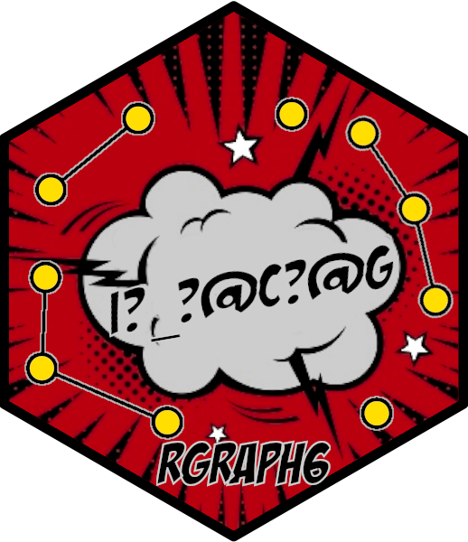

rgraph6: Representing Graphs as 'graph6', 'digraph6' or 'sparse6' Strings
rgraph6-package.Rd
Encode network data as strings of printable ASCII characters. Implemented functions include encoding and decoding adjacency matrices, edgelists, igraph, and network objects to/from formats 'graph6', 'sparse6', and 'digraph6'. The formats and methods are described in McKay, B.D. and Piperno, A (2014) <doi:10.1016/j.jsc.2013.09.003>.
Details
Formats 'graph6', 'sparse6' and 'digraph6' represent graphs as
strings of printable ASCII characters. The formats are due to Brendan McKay who implemented them in his program
Nauty (McKay 1978, 1980, 2003, McKay & Piperno 2014), and are described
in detail here. Package
rgraph6 is a native R implementation of these formats.
The main functions are as_graph6(), as_digraph6(), as_sparse6() for
encoding network data and igraph_from_text() and network_from_text() for
decoding. There are also other low-level functions to decode directly from
digraph6, graph6, and
sparse6.
Citation
When using this package please cite it by referring to the following publications: McKay B, Piperno A (2014). "Practical graph isomorphism, II." Journal of Symbolic Computation, 60, 94-112.
Bojanowski M, Schoch D (2021). rgraph6: Representing Graphs as graph6, dgraph6 or sparse6 Strings. R package version: 2.0-0, <URL: https://github.com/mbojan/rgraph6>.
Call citation(package="rgraph6") for more details and the BibTeX entry.
References
McKay, B. D. (1978) Computing automorphisms and canonical labellings of graphs Combinatorial Mathematics, Lect. Notes Math., vol. 686, Springer-Verlag, Berlin, pp. 223-232 doi: 10.1007/BFb0062536
McKay, B. D. (1981). Practical graph isomorphism. Congressus Numerantium, 30, pp. 45-87
McKay, B. D. (2003). "Nauty" User’s Guide (version 2.2) (p. 112). Technical Report TR-CS-9002, Australian National University.
McKay, B. D., & Piperno, A. (2013). Nauty and Traces user’s guide (Version 2.5). Computer Science Department, Australian National University, Canberra, Australia.
McKay, B. D., & Piperno, A. (2014). Practical graph isomorphism, II. Journal of symbolic computation, 60, 94-112. doi: 10.1016/j.jsc.2013.09.003
Author
Maintainer: Michal Bojanowski michal2992@gmail.com (ORCID) (Kozminski University)
Authors:
David Schoch david@schochastics.net (ORCID)